KubeCon 欧洲 2025 小记
上周，我随公司一同参加了在英国举行的 KubeCon + CloudNativeCon Europe 2025 以及几个同地活动。今年的伦敦也是热闹非凡，吸引了超过 12500 人来到了 ExCeL London。
如果你错过了这次活动，不妨先通过我给公司制作的 2 分钟 Highlights 视频先感受一下现场气氛。
这篇博客主要记录我一周的见闻，包括参与 KubeCon 活动，在伦敦的食住行等等。这不包含技术内容，一是因为工作内容原因，其实并没有在会场听很多的分享，二是不想将有趣的旅程演绎得太过枯燥。
Anyways，如果你也想在今年或者明年参与欧美举行的 KubeCon，相信本文会对你有所帮助。
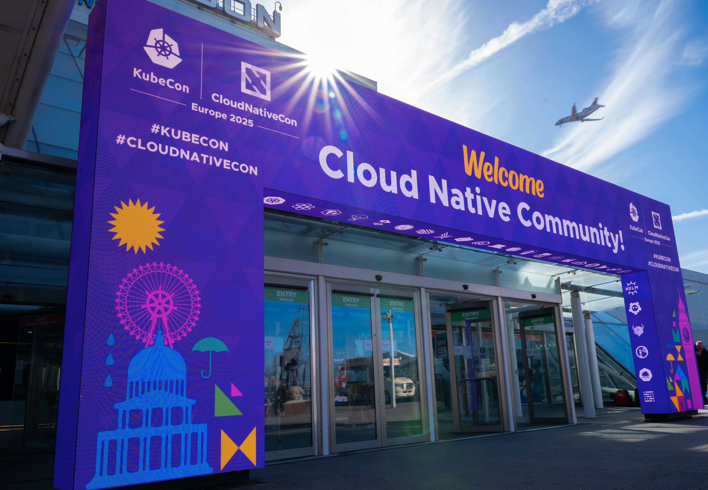
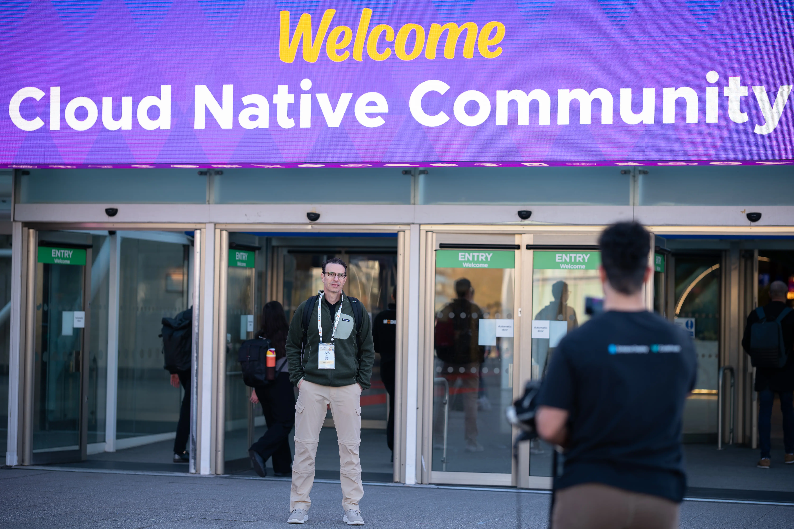
0. 活动准备
在 KubeCon 开始之前，有几件事是特别重要的：
- 提交演讲议题（CFP）；
- 申请英国签证；
- 预定机票酒店。
KubeCon 的议题投递是从 9 月中旬开始，到 11 月末截止，也就是相比活动时间提前半年左右。整体的节奏应该是：
- 2 个月准备议题、完成投递；
- 2 个月 Program Committee 审核议题，确定录用；
- 2 个月准备演讲材料。
因为通常欧美的签证都需要提前预约，且有不通过需要二签的风险，所以在得知议题通过（或者确定要前往参加）后，就要尽快准备签证材料。我会在议题结果出炉前就预定酒店机票（可免费退改），然后在结果公布当天就预约签证材料递交，然后在递交前这两周补充剩下的材料（各类复印件、资产证明等）。
英国的签证还是比较友好的，花费 1108.00 CNY，通常会批准两年多次往返。
除了上面这些例行事项，今年我还作为 KubeCon Observability 方向以及同地活动 Observability Day 的 Program Committee 与其他成员一同为众多提案打分。我一共评价了 125（KubeCon）+ 95（Observability Day）份提案，这只是所有提案中的一小部分。
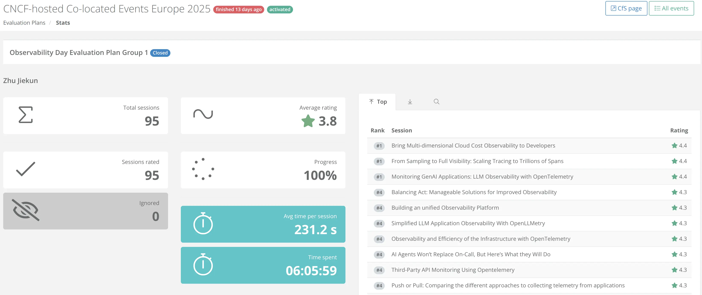
如果不需要写评分和评语的话，阅读别人的提案、了解别人做过什么事情还是挺有趣的。尽管 KubeCon 是云原生领域几乎最大的盛会，它每年还是会收到很多面向初学者的提案，这些提案无非是介绍一些新项目、新功能，要在它们之中分个高低很困难。另一方面，来自 Vendor 的投稿比例很高，有些议题看似很美好，但是没有提及它们在 End-user 的实践中表现如何，所以也很难去评价。
1. 场地活动
KubeCon 首先是技术会议，大大小小几百场分享很丰富，但是这不是本文想介绍的，因为大家对技术分享肯定都很了解，甚至可能已经感到枯燥乏味了。
但是如果我说，你能在 KubeCon 见到各个项目的维护者、项目背后的企业，你会想和他们聊上几句，并顺便带走一件文化衫和钥匙扣吗？
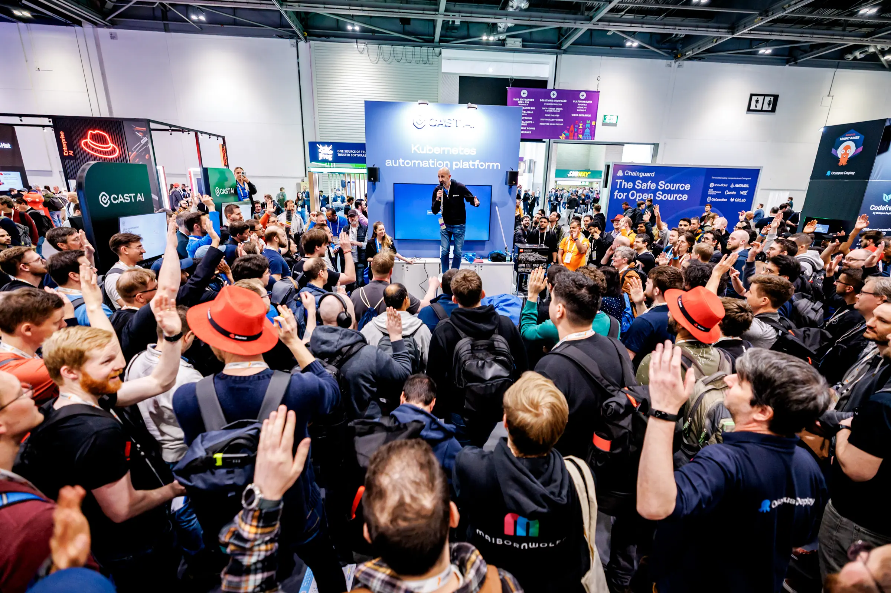
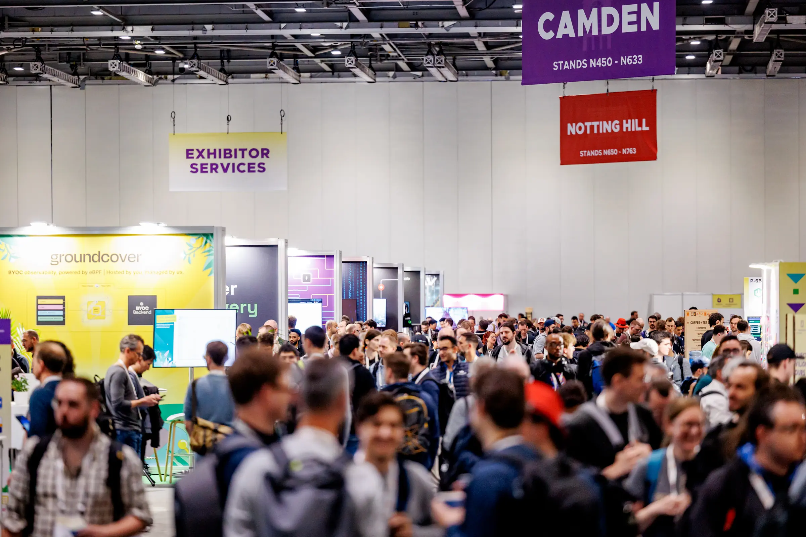
Sponsor Showcase & Project Pavilion
这次因为大部分时间都在 Booth Duty，所以只有用餐时间开溜出去搜刮众多赞助商展位，战果还可以：
- Dynatrace（Platform Engineering for Architects 赠书）
- MinIO（T恤）
- honeycomb.io（T恤）
- OpenSearch（T恤）
- PagerDuty（T恤）
- Vultr（手办）
- New Relic（袜子）
- Cribl（袜子）
- GitHub（徽章）
- …
因为有一些赞助商像 Red Hat、Sentry、VictoriaMetrics（我薅我自己？）等等去年已经拿过礼品了，今年就没重复薅羊毛。稍微可惜一点的可能要数没拿到 dash0 的背包和 OVHCloud 的 Credit。
另外 Prometheus、Thanos、Cortex、OpenTelemetry、Jaeger 这些 CNCF 项目都有自己的小展台，虽然一般没礼品，但是路过也可以交流一下。
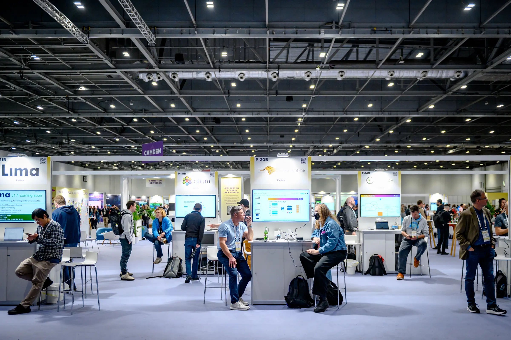
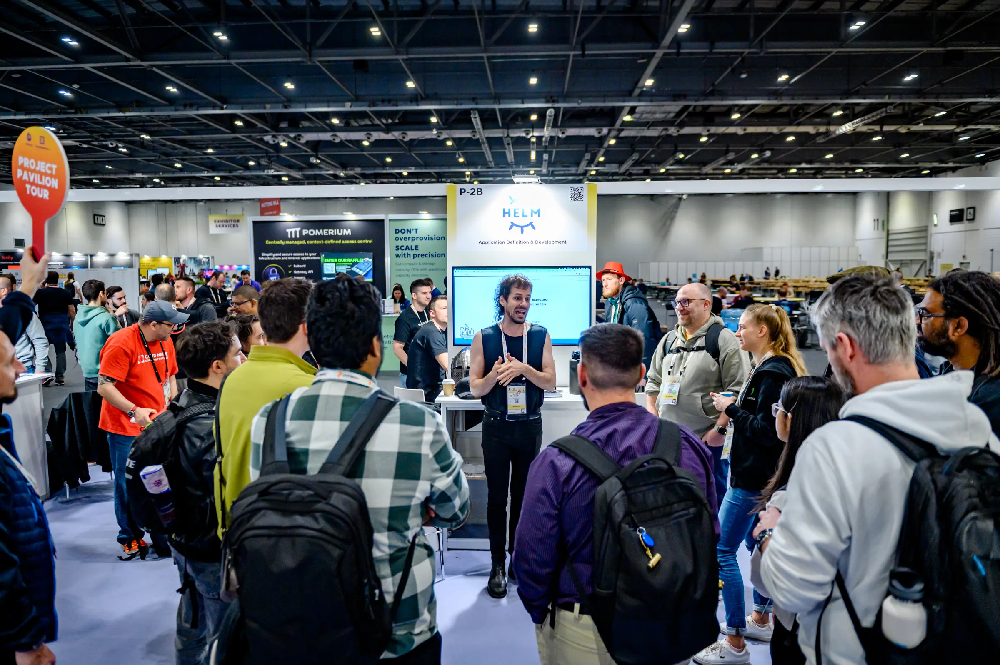
总体来说，挎着大包小包、盆满钵满地离开会场人很多，所以 KubeCon 对喜欢收集文创参会者来说算是很不错的活动。
Headshot
看到小标题不要误会，这不是真人 CS。Headshot 是为参会者提供专业形象摄影的服务，摄影师会给你打好光，只需几分钟，就能帮你拍出专业的简历照片。如果你想找个例子看看到底会拍成什么样子，可以参考 Google: KubeCon Headshot。
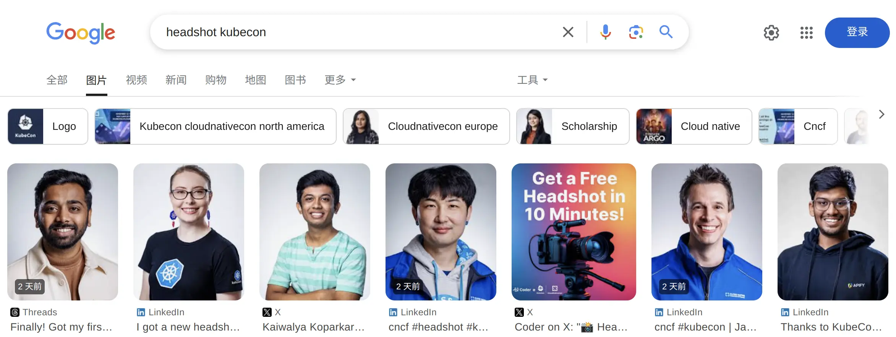
2. 对话用户
因为公司也是活动的 Silver 赞助商，所以有 Booth Duty，接待了很多用户。在线下与用户交流当然算是公司赞助活动的目标之一，了解用户对我们有什么满意和不满意的地方。
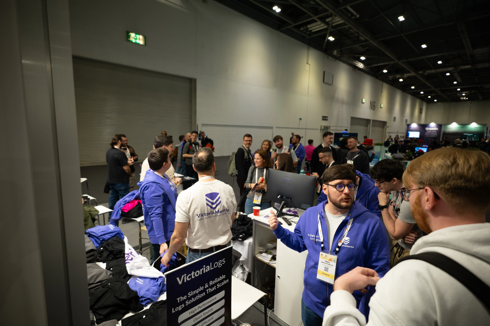
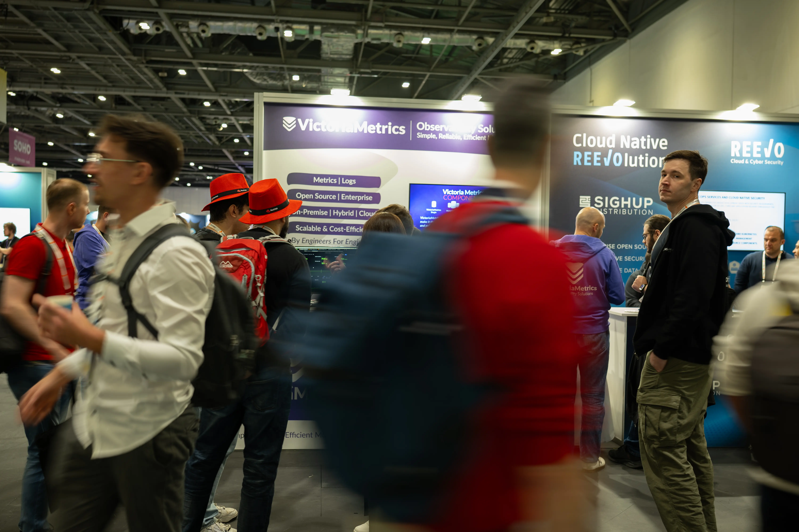
我原本预期应该跟用户沟通起来会比较麻烦，毕竟英语口语能力有限，不过所幸用户问的难题也不多，主要还是以介绍为主，再附赠一些竞品（比如 Prometheus、Thanos、Mimir）的对比。
当然偶尔也会有老用户过来吐一下苦水，希望我们有什么好的银弹可以帮他们解决问题 —— 但是通常来说这都是不可能的。:)
3. 伦敦风光
因为参加 KubeCon 也是一次难得的欧美旅游机会，除了参加会议以外，当然要在当地大大小小的景点逛一遍。
考虑到会议时间是周二到周五，我选择了周六从国内出发，落地后先玩 2 天，参加会议的下午如果能早点下班也可以逛一下不太远的景点，最后周末再玩 2 天，周日晚上离开伦敦，这样整体的时间就比较宽裕。
不过首先要谈的是英国的物价，住宿、饮食和交通都是比较贵的，比起香港和巴黎都要贵出一截。
每日从早餐开始，先花 7 GBP（66 CNY）还不算高，正餐 20-40 GBP（190-381 CNY） 是常事。至于住宿，我选择在了狗岛金丝雀码头的 Point A Hotel，离会场比较近，并且交通有三条地铁线，非常便利，不过是最低规格的无窗房，平均每天是 110 GBP（1049 CNY），也算是住宿里面比较便宜的选择。
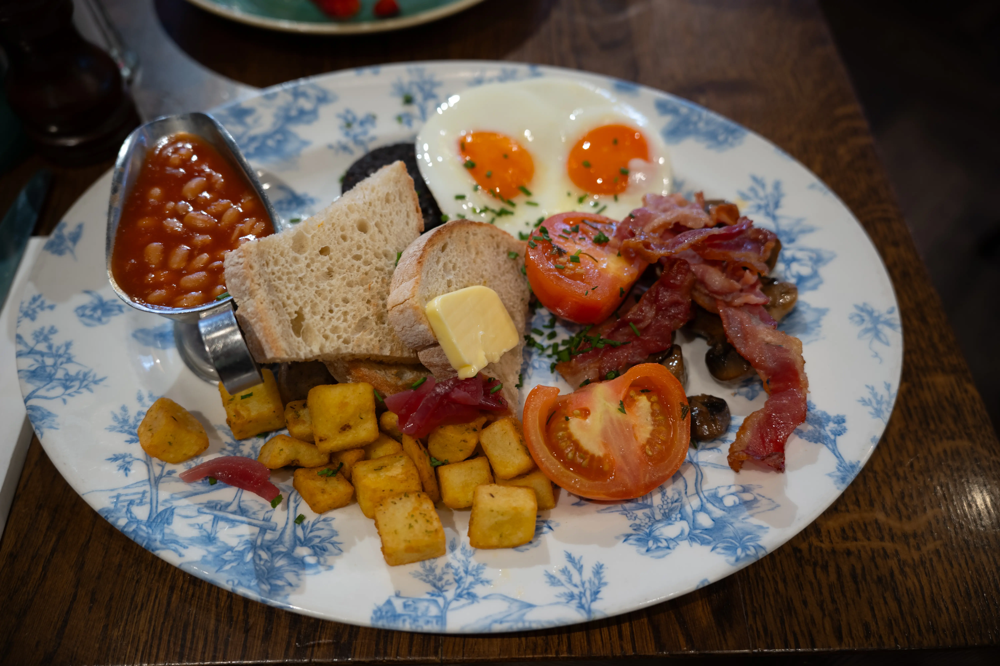
最超出预期的当然要数交通了，地铁起步价大约 2.9 GBP（27 CNY），一天下来要来回会场、去 1-2 个景点开销差不多 12 GBP（114 CNY）。再算上首尾两天往返机场都是单程 13.9 GBP（132 CNY），总之在伦敦 8 天花掉的地铁钱一千多 CNY 肯定是有的。
说完了最头疼的成本，再介绍一点好的风光吧。必打卡的三件套大本钟（Big Ben）、伦敦眼（London Eye）、伦敦塔桥（Tower Bridge）离得不远，最好傍晚的时候去景色会比较好，不过一些热门机位排队拍照的人也多就是了。
离会场 ExCeL London 不远处还有落日飞车（IFS Cloud Cable Car），同样是傍晚时分风景最佳，可以看到很漂亮的城市剪影以及会场。
白金汉宫（Buckingham Palace）我在落地伦敦的第二天就去了，因为周日有卫兵交接，大概类似于国内首都升旗仪式，观看的人也很多，围得水泄不通。第一次去可能很难找到最佳观景点，最好早上 9 点 15 分去到占住位置，然后晒 45 分钟就可以开始拍视频了。
除了伦敦以外，离得比较近的城市也时可以找 2 天空闲时间去看一下。我原本计划去 Eastbourne 的白崖（Birling Gap and Seven Sisters），但是因为一些交通原因被困在了 Brighton，所以就在附近海滩打卡吃饭了。另外还有一天安排了去牛津（University of Oxford），因为临近返程有点疲惫也取消了行程，略可惜。

4. 总结
以上就是参加一次 KubeCon 的完整经历，其实出外参加这些活动无非就几个目的：
- Social 认识更多的专业领域上的朋友；
- Gap 一周当作工作这么久的奖励；
- 去欧美旅游看看国外的风土人情。
具体到应该侧重休闲还是抓紧时间 Social 和学习，完全取决于个人需求，但是至少 KubeCon 给了你出去一趟的理由 —— 或许还有申请公司差旅补贴和假期的理由。
到写下本文的时候，11 月的 KubeCon North America 2025 CFP 已经开始了。如果你也想工作之余趁机休息调整一下，不妨将你的宝贵经验整理成议题在 KubeCon 分享，希望能在亚特兰大见面！
5. KubeCon 相册
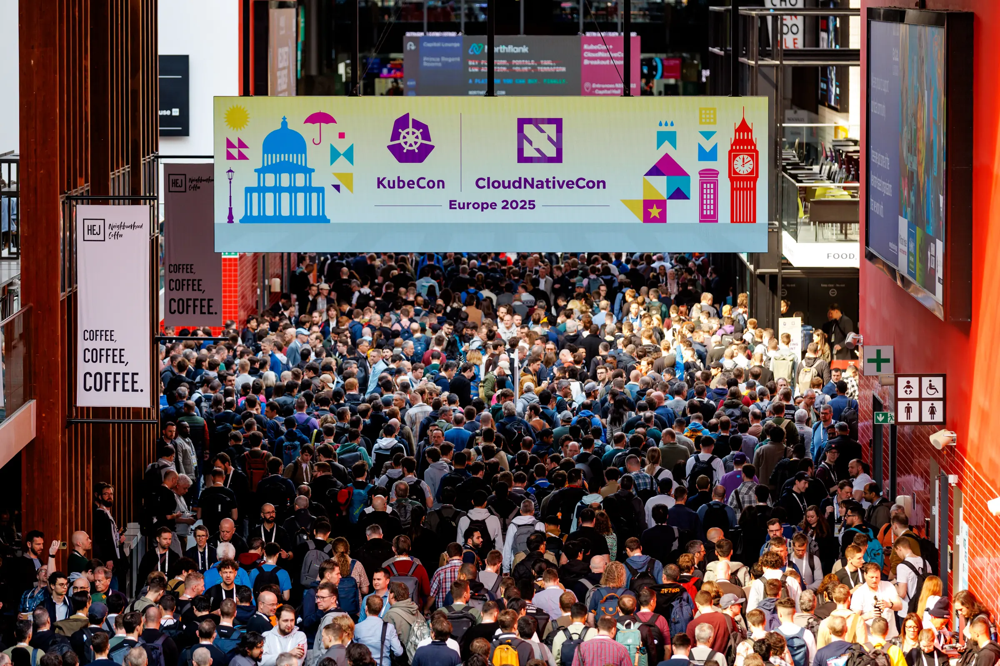
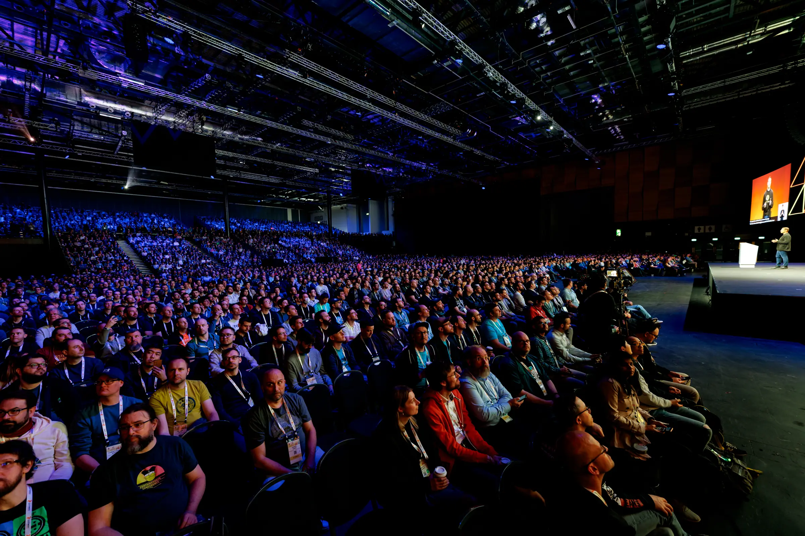
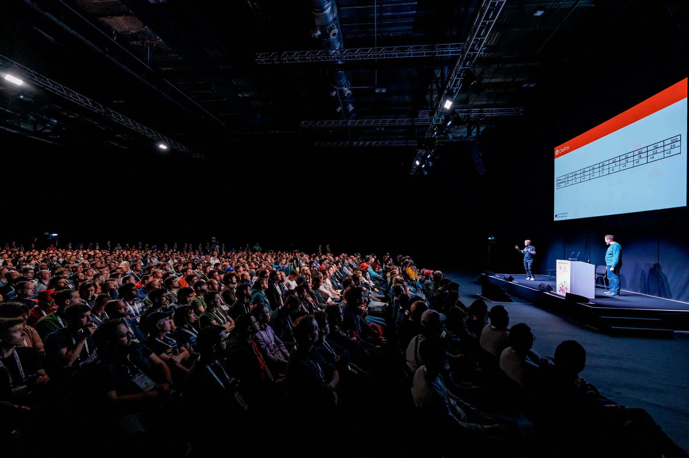
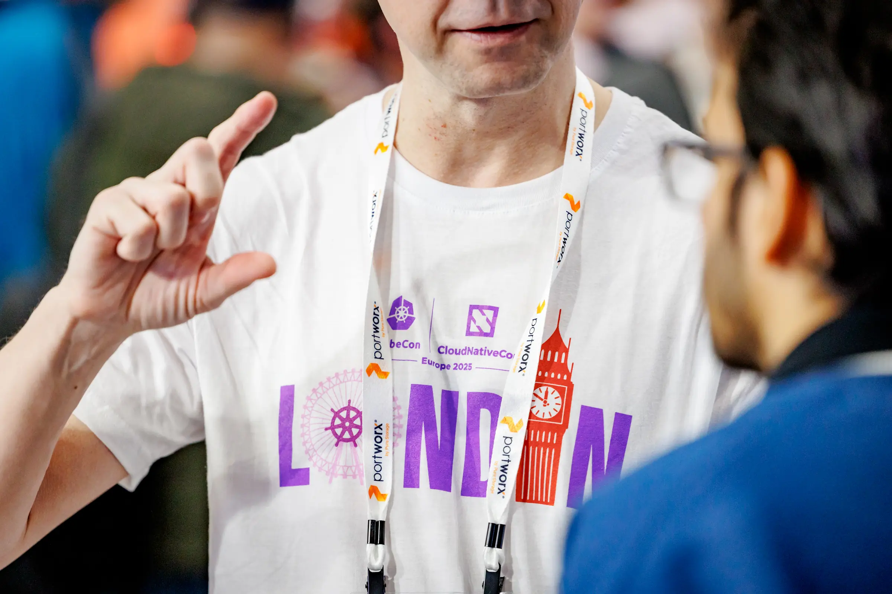
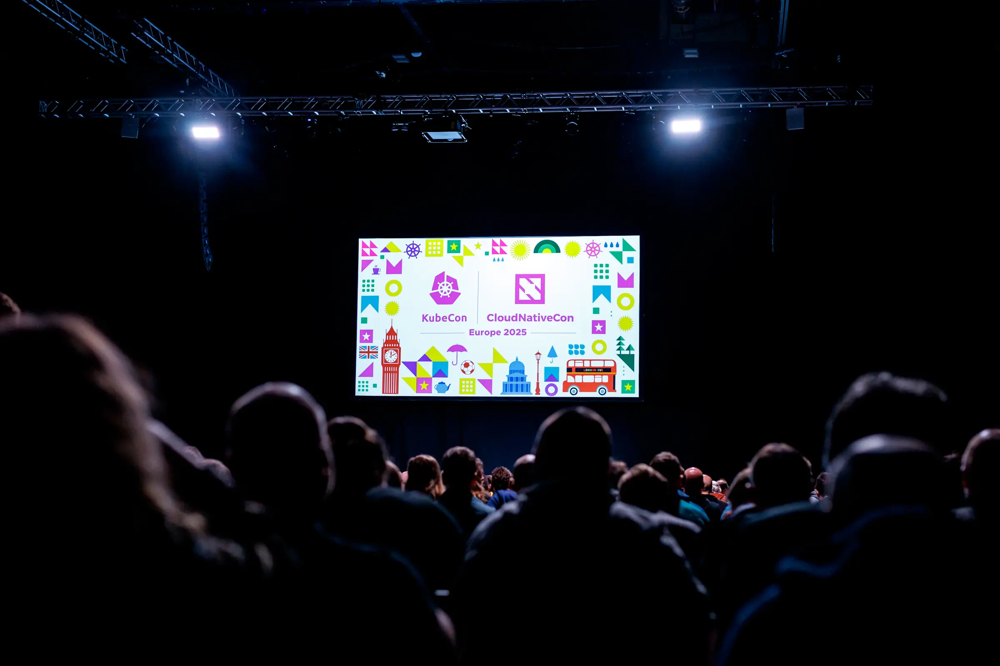